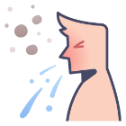
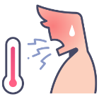

1. Tuang sabun pada tangan secukupnya.
2. Basahi tangan dengan air mengalir.
3. Gosok telapak tangan yang satu ke telapak tangan lainnya.
4. Pastikan seluruh tangan tergosok .
5. Keringkan tangan dengan lap sekali pakai
1. BATUK
2. DEMAM TINGGI
3. SAKIT TENGGOROKAN
4. SESAK NAPAS